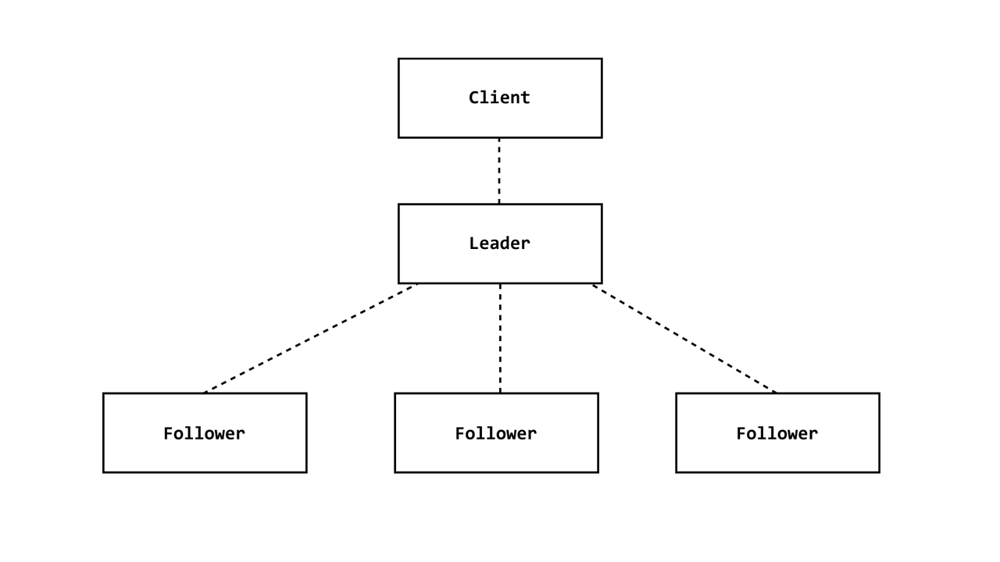

I wanted to start this blog off with a project that I finished recently as it's still fresh on my mind.
I created this distributed cache, so I could implement some of the design patterns I learned recently along with implementing some networking. This post doesn't contain ALL the code from the project, but only the snippets of important design decisions and implementations from the project.
I will first talk about how I made the cache itself then later how I was able to implement concepts from distributed systems to make it more scalable, available, and consistent.
the cache
The cache is a basic map that contains a key as a string and a slice of bytes as data.
type Cache struct {
lock sync.RWMutex
data map[string][]byte
}
The lock is used in order to ensure safe concurrent access to the data stored in the data map. When multiple goroutines accessing data in the map, there is a risk of data races, which can lead to inconsistent data.
The sync.RWMutex has lock and unlock methods, which can lock data to ensure safety:
- RLock/RUnlock : Locks the data so multiple goroutines can read from the data but cannot write to it
- Lock/Unlock : Locks the data so only one goroutine can read or write to it
This allows us to safely read and write data to the cache.
Now, we can build an interface for what methods the cache should have. It would make sense that a cache should be able to store, get, delete, and check if a piece of data exists in the cache. So, let's make a cacher interface containing these methods.
type Cacher interface {
Set([]byte, []byte, time.Duration) error
Has([]byte) bool
Get([]byte) ([]byte, error)
Delete([]byte) error
}
An interesting thing to point out is the duration inside of the Set method. This is the "time to live" or lifespan of the data inside the cache. This way we can optimize cache storage, performance, and data freshness.
func (c *Cache) Delete(key []byte) error {
c.lock.Lock()
defer c.lock.Unlock()
delete(c.data, string(key))
return nil
}
func (c *Cache) Has(key []byte) bool {
c.lock.RLock()
defer c.lock.RUnlock()
_, ok := c.data[string(key)]
return ok
}
func (c *Cache) Get(key []byte) ([]byte, error) {
c.lock.RLock()
defer c.lock.RUnlock()
keyStr := string(key)
val, ok := c.data[keyStr]
if !ok {
return nil, fmt.Errorf("key %s not found", keyStr)
}
log.Printf("GET %s = %s", string(key), string(val))
return val, nil
}
func (c *Cache) Set(key, value []byte, ttl time.Duration) error {
c.lock.Lock()
defer c.lock.Unlock()
c.data[string(key)] = value
log.Printf("SET %s to %s \n", string(key), string(value))
go func() {
<-time.After(ttl)
delete(c.data, string(key))
}()
return nil
}
It's important to note that the Delete/Set methods use the Lock/Unlock Mutex methods because they directly write/delete data to the cache, which could lead to race problems. The Get/Has methods use the RLock/RUnlock Mutex methods because it only reads data from the cache, allowing other goroutines to also read data at the same time.
Surprisingly, that is all we needed to implement the basic cache. A few basic methods and a lock on the data for safety.
Now, we need to make a cluster of servers that can hold our cache.
the server
The server will also be basic. It should have a port, a cache, and the ability to communicate with other servers. Since we want this to be distributive, there will need to be a system of communication between the servers. This comes to the design decision: Leader-Follower pattern.
What is the Leader-Follower Pattern?
It's a common pattern in distributed systems where there is a Leader server that will act as the central point, receiving read, writes, and updates it s followers.
The Leader is able to distribute data its Followers in order to stay consistent. When load increases, the Leader can delegate tasks to the Followers to minimize load from reads to focus on writes. Along with that, if the Leader were to ever shut down, a Follower would be able to take its place.
General Advantages of Leader-Follower Pattern:
- Consistency: By having a single source of truth from the leader server, we can send down the writes to the followers to maintain consistency across all the servers.
- High Availability: In case the leader fails, we can elect a new leader from one the followers, ensuring the system stays available.
- Scalable: When load increases, the leader can delegate read operations to the follower servers.
Understanding the pattern now, we know that our server could either be a Leader or a Follower.
This means that we need to be able to identify each server with its own port, whether its a leader, and where the leader is if it's not. These are each of the Server's Options that we can configure.
type ServerOpts struct {
ListenAddr string
IsLeader bool
LeaderAddr string
}
Now in order to make the server, we can embed the Server Options into the Server along with a map of its followers (if it's a Leader) and the Cache.
type Server struct {
ServerOpts
followers map[net.Conn]struct{}
cache cache.Cacher
}
func NewServer(opts ServerOpts, c cache.Cacher) *Server {
return &Server{
ServerOpts: opts,
cache: c,
followers: make(map[net.Conn]struct{}),
}
}
Notice that the cache is a "cacher." This is the interface of the Cache that we created previously.
The net.Conn inside the follower map is an interface that is a generic network connection in Go.
Now that we have our server, we need to start listening, accepting, and handling connections.
func (s *Server) Start() error {
ln, err := net.Listen("tcp", s.ListenAddr)
if err != nil {
return fmt.Errorf("listen error: %s", err)
}
log.Printf("server starting on port %s \n", s.ListenAddr)
}
This code will listen to the specified port and return a listener when we connect to the port.
func (s *Server) Start() error {
...
for {
conn, err := ln.Accept()
if err != nil {
log.Printf("accept error : %s \n", err)
continue
}
go s.handleConn(conn)
}
}
This code will then look at the listener and then accept any incoming connection to the listener.
After accepting the connection, we will open a goroutine to handle the connection.
The problem is that we also need to handle the connection differently if we are the follower server. The leader server can listen to incoming connections from the client and followers, but the followers should only connect to the leader server. So if we are a follower server, we should dial the leader server.
func (s *Server) Start() error {
...
if !s.IsLeader {
go func() {
conn, err := net.Dial("tcp", s.LeaderAddr)
fmt.Println("Connected to leader : ", s.LeaderAddr)
if err != nil {
log.Fatal(err)
}
s.handleConn(conn)
}()
}
}
Once we have a connection, regardless of we are the leader or the follower, we want to receive specific data concerning the cache.
We need to make some sort of protocol that we can send between our servers and client so they can communicate with each other.
We have a few options to go for:
- JSON
- HTTP
- GRPC
- Binary
Very commonly, microservices utilize GRPC, JSON, or HTTP to communicate, but I wanted to try something a little different and lower level.
So I decided to just use basic command structure in binary to make a communication protocol.
func (s *Server) handleConn(conn net.Conn) {
defer func() {
conn.Close()
}()
if s.IsLeader {
s.followers[conn] = struct{}{}
}
fmt.Println("Connection made : ", conn.RemoteAddr())
buf := make([]byte, 2048)
for {
n, err := conn.Read(buf)
if err != nil {
log.Printf("Conn read error: %s \n", err)
break
}
msg := buf[:n]
log.Println(string(msg))
go s.handleCommand(conn, msg)
}
}
So the way we handle connection:
- Make sure that we are the leader that we update our follower map with the new connection
- Save a Buffer that we will fill with the binary data
- Read the stream of data from the connection and save it to the buffer
- Save the data stored from the buffer into a message structure that we will parse for the command
Since we made the decision to make our own protocol using binary, we need to come up with a structure on the commands.
I decided on a simple structure on the commands:
COMMAND | KEY | VALUE | TIME TO LIVE (TTL)
Where the only possible commands are:
- SET KEY VALUE TTL
- GET KEY
- DELETE KEY
type Command string
const (
CMDSet Command = "SET"
CMDGet Command = "GET"
CMDDelete Command = "DELETE"
)
type Message struct {
Cmd Command
Key []byte
Value []byte
TTL time.Duration
}
The commands are understandable except for the TTL. The TTL is the "Time to Live" for the data in the cache. After the specified TTL, the cache will automatically delete the data from the cache.
The reason why we maintain a TTL is for storage efficiency and preventing stale data.
Now we want to make sure whenever we receive the raw bytes of the command, we can parse it into the Message struct, so we can easily translate the commands into the right methods in the cache.
func parseCommand(raw []byte) (*Message, error) {
var (
rawStr = strings.TrimSpace(string(raw))
parts = strings.Split(rawStr, " ")
)
if len(parts) < 2 {
log.Print("invalid command")
return nil, errors.New("invalid command")
}
msg := &Message{
Cmd: Command(parts[0]),
Key: []byte(parts[1]),
}
if msg.Cmd == CMDSet {
if len(parts) != 4 {
log.Print("invalid command")
return nil, errors.New("invalid SET command")
}
msg.Value = []byte(parts[2])
ttl, err := strconv.Atoi(strings.TrimSpace(parts[3]))
if err != nil {
log.Print("invalid SET ttl command")
return nil, fmt.Errorf("invalid SET ttl command: %v", err)
}
msg.TTL = time.Duration(ttl)
}
return msg, nil
}
Now that we have a way to parse command the commands from the raw bytes, we can now send commands to the cache based on the parsed command.
func (s *Server) handleCommand(conn net.Conn, rawCmd []byte) {
msg, err := parseCommand(rawCmd)
if err != nil {
log.Println("Failed to parse command : ", err)
conn.Write([]byte(err.Error()))
return
}
log.Printf("Received Command %s", msg.Cmd)
switch msg.Cmd {
case CMDSet:
err = s.handleSetCommand(conn, msg)
case CMDGet:
err = s.handleGetCommand(conn, msg)
}
case CMDDelete:
err = s.handleDeleteCommand(conn, msg)
}
if err != nil {
log.Println("Failed to handle command : ", err)
conn.Write([]byte(err.Error()))
}
}
Now we just have to handle the SET, GET, and DELETE commands.
func (s *Server) handleSetCommand(conn net.Conn, msg *Message) error {
if err := s.cache.Set(msg.Key, msg.Value, msg.TTL); err != nil {
conn.Write([]byte(fmt.Sprintf("Error setting key: %v", err)))
return err
}
go s.sendToFollowers(context.TODO(), msg)
return nil
}
func (s *Server) handleGetCommand(conn net.Conn, msg *Message) error {
val, err := s.cache.Get(msg.Key)
if err != nil {
conn.Write([]byte(fmt.Sprintf("Error getting key: %v", err)))
return err
}
_, err = conn.Write(val)
return nil
}
func (s *Server) handleDeleteCommand(conn net.Conn, msg *Message) error {
err := s.cache.Delete(msg.Key)
if err != nil {
conn.Write([]byte(fmt.Sprintf("Error deleting key: %v", err)))
return err
}
_, err = conn.Write([]byte(fmt.Sprintf("Deleted %s", msg.Key)))
go s.sendToFollowers(context.TODO(), msg)
return nil
}
These commands are just sending the specified command to the cache along with the key and data provided in the Message struct.
What's interesting is how we handle the distribution of the message to the other nodes. Since we need the nodes to be consistent with each other, write operations such as the SET and DELETE need to send the message to the followers, so they can update their cache.
So we open a goroutine to send the message to the followers of the leader.
func (s *Server) sendToFollowers(ctx context.Context, msg *Message) error {
for conn := range s.followers {
rawMsg := msg.ToBytes()
fmt.Println(" fowarding :", string(rawMsg))
_, err := conn.Write(rawMsg)
if err != nil {
log.Println("write to followers error ", err)
continue
}
}
return nil
}
This works well because the followers will have an empty follower list, so the goroutine will stop immediately.
It's important to note that we need convert the message back into its raw bytes because the handleCommand of each server expects a raw set of bytes rather than the Message struct.
func (m *Message) ToBytes() []byte {
var cmd string
switch m.Cmd {
case CMDSet:
cmd = fmt.Sprintf("%s %s %s %d", m.Cmd, m.Key, m.Value, m.TTL)
case CMDGet:
cmd = fmt.Sprintf("%s %s", m.Cmd, m.Key)
case CMDDelete:
cmd = fmt.Sprintf("%s %s", m.Cmd, m.Key)
default:
panic("unknown command")
}
return []byte(cmd)
}
And just like that, we completed the server for the distributed cache!
Now we just need to create a main method that will boot the server.
func main() {
listenaddr := flag.String("listenaddr", ":3000", "listen address of server")
leaderaddr := flag.String("leaderaddr", "", "the listen address of the leader")
flag.Parse()
opts := ServerOpts{
ListenAddr: *listenaddr,
IsLeader: len(*leaderaddr) == 0,
LeaderAddr: *leaderaddr,
}
server := NewServer(opts, cache.New())
server.Start()
}
the test
Using flags on the command line, we can easily boot up a leader or a follower by adding the leaderaddr port. Lets make a simple Make file, so we can easily run the commands.
build:
@go build -o bin/dc
run: build
@./bin/dc
runfollower: build
@./bin/dc --listenaddr :4000 --leaderaddr :3000
test:
@go test -count=1 ./... -v || { echo 'Tests failed'; exit 1; }

OUR TESTS ARE WORKING!
Although the SET and GET functions work on the server and cache, there's a clear problem with the client.
The leader server doesn't know how to differentiate between a client and a follower!
This is what causes the client (the telnet connection) to receive back its own command because the leader sends the command back to its followers.
the refactor
So we need to let's add a client list to the server along with some helper methods to add follower and client connections.
type Server struct {
ServerOpts
followers map[net.Conn]struct{}
clients map[net.Conn]struct{}
cache *Cache
}
func (s *Server) addFollower(conn net.Conn) {
s.followers[conn] = struct{}{}
}
func (s *Server) addClient(conn net.Conn) {
s.clients[conn] = struct{}{}
}
func (s *Server) removeConn(conn net.Conn) {
delete(s.followers, conn)
delete(s.clients, conn)
}
Now that we have the ability to add a client and follower connection to the server maps. We need a way to differentiate between the two of them.
I created a simple protocol where we listen for the first write operation labeling itself "FOLLOWER" or "CLIENT".
func (s *Server) handleConn(conn net.Conn) {
defer func() {
conn.Close()
s.removeConn(conn)
}()
if s.IsLeader {
bufMsg := make([]byte, 2048)
n, err := conn.Read(bufMsg)
if err != nil {
log.Printf("Handshake read error: %v", err)
return
}
handshakeMsg := string(bufMsg[:n])
if strings.TrimSpace(handshakeMsg) == "FOLLOWER" {
s.addFollower(conn)
log.Println("Follower connected:", conn.RemoteAddr())
} else {
s.addClient(conn)
log.Println("Client connected:", conn.RemoteAddr())
}
}
// Process further commands like before
...
}
Now that we are able to differentiate between the two, we just have to make sure that the follower automatically labels itself when it connects.
So now we just have to write to the leader automatically if we are a follower.
func (s *Server) Start() error {
...
if !s.IsLeader {
go func() {
conn, err := net.Dial("tcp", s.LeaderAddr)
fmt.Println("Connected to leader : ", s.LeaderAddr)
if err != nil {
log.Fatal(err)
}
// Write to the leader that we are a follower
conn.Write([]byte("FOLLOWER\n"))
s.handleConn(conn)
}()
}
...
}
Now we can properly differentiate between follower and client connections.
Let's test our cache now!
the final test

Just like that we have a working distributed cache!
the reflection
So what have we implemented so far?- Cache : that can get, store, and delete data
- Server : that can be a leader or a follower server that can distribute data, stay consistent, and scale with multiple servers
Out of the three pillars : Available, Consistent, and Scalable, we forgot to implement Availability!
The reason is that we have hard coded a leader and follower nodes. If the leader were to ever fail on us, the follower node would be left without a leader and the client wouldn't know how to reconnect to the leader.
So now, we have need to build a consensus algorithm.
the raft algorithm
The Raft Algorithm is a consensus algorithm that improves the Leader-Follower Pattern by creating a protocol to elect leaders and update states.